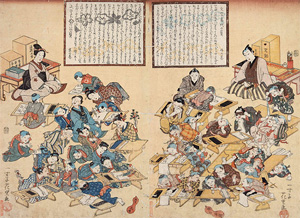
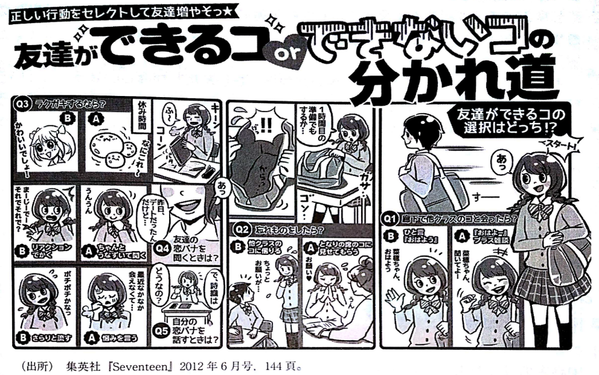
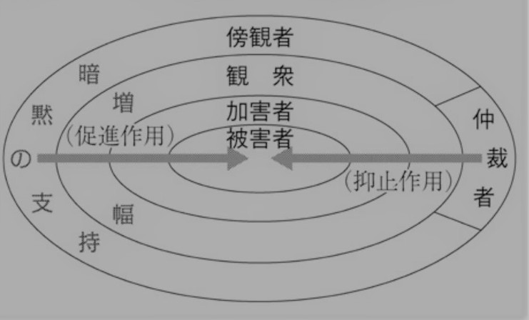

3 社会化（1）：カリキュラムと知識 /学級・ホームルーム
–>
3.1 コメントへのフィードバック
- コメント提出時に、人によってコピー元（前回と同じものなど）が表示されることがあります。その場合、(1)再読み込み、(2)一度未入力状態で送信・提出すると解消しそうです。
- 「授業のスライドがまとまってるファイルがほしい」
- \(\rightarrow\) うまくひとまとめにする方法を調べているので、少々お待ちください
- 「教育も社会学的に考えられる授業なので、必ず自分も対象者なので面白い」
- \(\rightarrow\) 社会学の特徴として、社会を観察する側（社会学者など社会学的に考察する側）も必ず社会の中にいるため内部観察にならざるをえないという面を強調する立場（佐藤俊樹 , 2009, 『社会学の方法』ミネルヴァ書房）があります。
- 教育に関しては、基本的に全員が教育を受けてきたのでその面が意識しやすいかもしれません
これまで経験した初等教育、中等教育、高等教育のうち、あなたが今後社会で生きていく上で最も役に立ちそうなのはどの段階か
初等教育
- 私は初等教育が最も社会で重要なことを学ぶ学校段階であると考える。社会を学ぶという意味では初等教育が重要であると考えた。初等教育では、物心ついてまもない子供達に、学校生活や道徳の授業を通して社会の一般常識、最低限の語学能力や計算能力を学ばせる。社会に出たときにその人の価値観を形成する場所である。
- 小学校です。小学校では、読み書きや計算など、その後の学習や日常生活に必要となる基礎的な力を得ました。応用をするにしても、この土台がないと出来ないと思うからです。
- 小学校教育の足し算・引き算・掛け算・割り算と、国語の読み書きです。社会生活を十分に送るのに最低限必要な能力だと思います。
- 私は、最も役に立ったのは初等教育だと考える。初等教育で学んだことは、勉強だけでなくコミュニケーションなどの基礎になっていて、中等、高等となって学ぶことはその応用になっているので初等教育を十分に終えることが最も役に立つと考える。
- 前回のリアペでも書いてしまいましたが、私は小学校の段階で人との関わり方や付き合い方を学びました。理由は、小学校が1番いじめや仲間はずれや悪口が活発であったことから、他人の意見を聞きやすく、どのような行動が嫌われ、好まれるかを学びました。
- 初等教育だと思う。小学校では、規則や人間関係、集団生活を通して、社会で生活するための基本的なルールや社会性を身につけた。自分の考えを持てるようになる一方で、叱られる経験などから物事の善悪を学び、周囲との関わり方や暗黙の了解も少しずつ理解していった。特に「時間を守る」という当たり前のことを繰り返し教えられた経験は、今後社会で生活する上でも重要だと感じている。
- 初等学校が次に学ぶ中等教育高等教育の人との接し方や学力などの基礎となる部分を育てる面で1番大切だと思う。
- 初等教育が最も役に立つと思う。初等教育では、勉強だけではなく、挨拶や人の話を聞くこと、時間を守ることなど、生活していくうえで当たり前のことを学んだ。これらは、現在のアルバイトやこれからの社会生活においても不可欠だと感じている。小学生の頃に当たり前のように学んでいたことが、今のアルバイトなどで実際に役立っていると実感しているので、初等教育で学んだことが最も役立つと思う。
- 私が、今後社会で生きていく上で最も役に立ちそうだと感じるのは初等教育だ。小学校になって、本格的に勉強が始まっただけでなく、運動会や縦割りクラスを通して、人との関わり方を1番学んだと感じるからだ。また、時間割のある授業や習い事を通して時間管理能力も身に付いたと思う。
- 初等教育である。勉強以外にも5分前行動、言葉遣いなど生活的、道徳的な教育が多かったように思える。そこで自分たちが社会でどのように振る舞っていくべきか子供としてではなく、1人の人間として生きていくための道徳的、社会的なことを学んだ。
- 初等教育。それに、小学校だけではなく幼稚園も私にとっては重要な教育段階だったと思う。周りの士気を下げるような行動はしないようにと教えられたことや、理不尽なことで怒られたことなどは、幼いながら強く印象に残っている。そして、それがその後の人生やものの考え方に影響していると思ったから。
- 私が最も役に立っていると感じるのは初等教育です。小学校では、読み書きや計算だけではなく、自分とは考え方や性格の違う人と毎日同じ教室で過ごす中で、相手に合わせたり、時には我慢したり、喧嘩などもしながら集団の中で生活することを覚えたと思います。大学では専門的な知識を学びましたが、社会に出れば、知識以上にさまざまな人と関わりながら仕事を進める場面が多いはずです。その意味で、社会で生きるための土台は小学校時代に作られたと感じています。
中等教育
- 中等教育が最も役に立つと思う。中学校や高校で初めて部活動が始まって、集団で一つの目標に向かって努力することや、成功体験を経験した。文化祭や体育祭などもある。自信につながり、社会の一員としてもうまく生きていけるようになると思う。
- 私は、中等教育が生きていく上で最も役に立つ段階だと思います。理由は主に二つあります。一つ目は、ある程度人格が形成された中で、勉強に加え様々なイベントを過ごすからです。イベントとは、学園祭や合唱コンクールといった行事から友達とのいさかいや恋愛などといった日常的なイベントまでです。人はこれらのイベントを通して色々なことを経験し、成長すると思います。二つ目は、進路に向き合うからです。特に一番は大学受験もしくは就職だと思います。これらに向き合うことで、将来自分が何をしたいのか、どうなりたいのかに向き合うことが求められます。これは自分という人間を知る上でとても重要なことだと思います。
- 中等教育だと思います。理由は大きく二つあります。一つ目は、物心が着いた状態で、学校の規則をしっかり守りつつ、様々なイベントを過ごすからです。例えば文化祭や体育祭、合唱コンクール、部活、恋愛などです。このようなイベントを通して、沢山のことを学ぶと思います。それは例えば人とのコミュニケーションや、規則を守ること、時間を守ること、他人に迷惑をかけたりかけられたりすることです。二つ目は、大学進学もしくは就職という人生のかなり重要な進路と向き合う時期だからです。多くの中学生、高校生が、高校受験、大学受験で自分と向き合い、将来何をして行きたいのかを決めます。このことは、人格を形成する上でとてもだわいじな過程だと思います。私は最終的に社会学部に進学しましたが、それは高校時代の合わない人とのコミュニケーションのストレスや恋愛の失敗から社会学を学ぶ意欲に繋がりました。
- 中等教育だと思う。勉強の中身というより、部活や行事、委員会で、年齢も性格もバラバラな人とどう一緒に動くかを学んだのが大きかった。今バイトでリーダーをやっていて、時間を守ったり、相手の状況を見て声をかけたりが自然にできるのは、中高の集団生活のおかげだと感じる。授業で出てきた隠れたカリキュラムに近いもので、教科書には載らないが、社会に出てから一番使うのはこのような部分なのではないかと思った。
- 私がこれまでの学校教育の中で、今後社会で生きていく上で最も役に立つと考えているのは、中学校時代の教育、特に野球部で学んだ礼儀や人との接し方である。中学時代は、挨拶をすること、目上の方に敬意を持って接すること、場面に応じた言葉遣いをすることなどを繰り返し教えていただいた。当時は部活動における決まりとして捉えていた部分もあったが、現在振り返ると、それらは社会生活を送る上で必要となる人間関係の基礎であったと感じている。大学生活やアルバイト、就職活動を経験する中でも、相手への敬意を言葉や態度で示すことは信頼関係を築く上で非常に重要である。知識や技能だけではなく、周囲の人と適切な関係を築くための基本的な姿勢を身につけられたという点で、中学校時代の野球部での経験が自分の人間としての基礎を形成したと考えている。
- これまで経験した教育段階のうち、社会で最も役立ちそうと感じたのは中等教育です。中等教育で学ぶ教養や知識もそうですが、部活動に参加したことで、先輩・後輩との上下関係のコミュニケーションやチームワークを学ぶことが出来たからです。また、勉強と部活の両立をするために、自分自身の生活習慣やスケジュール管理などを見直す癖がついたからです。
- 日本だと就職の最低条件として高卒であることが挙げられると考えるため中等教育が役に立ちそうだと考える。また、中学ではじめてしっかりとした試験のシステムを経験したため今後も役立つことを学んだと考える。
- 大学。履修登録制度で、何を勉強するかを決めるだけでなく、休みの日や放課後に何をするか自由度が高い中で、全てを自分で決めて生活するため。また、バイトなど社会に出て活躍する大人と関わることから社会に出るまでの練習などができるから。
- 私がこれまでの教育段階で最も社会で役立つと考えるのは、高等学校です。高校では、部活動や委員会活動を通して、自分とは異なる考えを持つ人と協力することの大切さを学びました。特に、修学旅行の班決めでは、多くの意見や希望を調整しながら、全員が納得できる形を考える経験をしました。この経験から、自分の意見を主張するだけでなく、相手の考えを理解し、周囲と協力して物事を進める力が身につきました。
- 中等教育が最も役に立つ段階だと思う。中学校、高校で生徒自身が問いを立てて分析し解決方法を提示する探究という授業があった。国語や数学といった一般教養の授業はひとつの正解を教わるが、これは主体的に興味のある分野を学ぶことができるので、将来何をしたいのか具体的に考えることができる。そのため、中等教育が自分の考えを言語化し、形成できる最初の段階であるためもっとも役に立つと思う。
高等教育
- 私は高等教育の段階が社会で今後生きていくうえで最も役に立ちそうだと思います。初等教育や中等教育の段階では、私は守られた環境、管理された環境にいたと感じますが、現在はすべて自己責任になっていると思うからです。(自分で履修登録をしたり、自分で教科書を買ったりなど)
- 私は、中等教育、特に中学校・高校で学んだことが、これから社会で生きていく上で一番役に立つと思う。もちろん小学校で学んだ基礎的な知識も大切であるが、中学・高校では勉強だけでなく、友達や先生、部活動などを通して、さまざまな人と関わる経験が多かったからである。意見が合わない人と関わったり、集団の中で自分の役割を考えたりする中で、周りと協力することや、相手に合わせて行動することを学んだ。社会に出ると、自分とは考え方や性格が違う人とも一緒に過ごす必要があるため、このような経験はこれからも役に立つと思う。また、時間を守ることや決められたことを守ることなど、学校生活の中では当たり前だと思っていたことも、社会に出る上では重要なことだと感じる。そのため、知識だけではなく、人と関わりながら社会で生活するための基本を学んだ中等教育が最も役に立つと考える。
- 私がこれまで受けてきた教育の中で、今後社会で生きていく上で最も役に立つと思うのは、高等教育である大学で学んだことです。大学では、専門的な知識だけでなく、自分で考えて行動することの大切さを学びました。高校までは先生から教えてもらったことを覚えることが中心でしたが、大学では自分で課題を見つけたり、必要な情報を調べたりする機会が増えました。社会に出ると、誰かから答えを教えてもらえるとは限らないため、自分で考えて行動する力は重要だと思います。また、大学生活では、授業や部活動などを通して、周りの人と協力することや、責任を持って行動することも学びました。これらは社会人になってからも必要になる力だと思うので、大学での学びが今後最も役に立つと考えました。”
- 今後、社会に出ていく上で最も役立つであろうことを身に着けられているのは高等教育であると思う。大規模な人数で授業を受けることや、様々なバックグラウンドを持った人と関わっていく経験が社会人になった時にも必要とされてくると考えているから。ただ、多くの人とコミュニケーションを取るスキルや間の取り方、信頼関係を築き上げていくための人間性は初等教育や中等教育の中で培われていくと思うので、「最も役立つ段階」を一概に決めるということは難しいと感じる。
- 大学での学びが一番役に立ちそうだと思う。初等・中等教育では、決まった答えを正確に出す力が中心でしたが、大学では、答えのない問いに自分で向き合う必要がある。ゼミやレポートで、資料を集めて考え、人に伝わる形にまとめる経験を重ねるうちに、物事を疑ってみる癖や、自分の意見に根拠を持たせる習慣が身についたと感じる。社会に出れば正解のない場面ばかりだと思うので、この力が一番の土台になると考えている。
- 社会で生きていく上で、と考えると、高等教育かもしれないと思う。中学校や高等学校と比べて、大学で学ぶことは専門性が高く、何か一つの学問を本気で学ぶと、学ぶ前に比べていろんな視点で物事を見ることができるようになる。高等教育に向かうための中等教育と考えると中等教育も役に立っているのだが、その段階までに手に入れた視野が社会に活かせる段階になるのはやはり高等教育のみであると感じる。これまで学んだことで一番重要なのは初等教育だと思う。個人的に、中等教育の教育内容は覚えていないが、初等教育の学びは身に染みついていると感じる。
1. 学校段階ごとの理由整理（多数派 vs 少数派）
どれがより重要であるかは、まったく答えがある問題ではありません。いちおう学術的には、収益率（私的収益率/社会的収益率）という概念から、より低い学校段階ほど収益率が高いと考えられています（ヘックマン, 2015, 『幼児教育の経済学』東洋経済新報社）。低い学校段階で習っていることが、想像以上に社会全体を底上げしていると考えるとイメージしやすいと思います。
【初等教育】
- 多数派の理由：「生きるための絶対的基盤（土台）の獲得」
- 認知的基礎：読み書き、四則演算（これがないと中高等教育の応用が成り立たない）。
- 基本的社会化：挨拶、5分前行動、時間管理、他者への我慢や集団生活のルール。
- 「後で学ぶ専門知よりも、アルバイトや社会生活で現実に毎日使っているのは小学校で刷り込まれた習慣だ」という実感。
- 少数派の理由：
- 幼稚園・就学前との対比：「小学校だけでなく幼稚園での理不尽に怒られた経験や、周りの士気を下げない訓練が原体験になっている」。
- 人間関係のネガティブな学習（摩擦の経験）：「最もいじめや仲間はずれ、悪口が活発だったからこそ、どういう行動が嫌われるか・好まれるかを学んだ」。
【中等教育】
- 多数派の理由：「『準・大人』としての集団関係と自己選択」
- 組織的・上下関係の社会化：部活動（特に野球部など）を通じた先輩・後輩関係、礼儀・敬語、チームワーク、行事（合唱祭・体育祭）での利害調整。
- 進路選択と自己形成：高校・大学受験や文理選択を通じて、「自分が何をしたいのか」「将来どう生きるか」に向き合う最初の契機。
- 少数派の理由：
- 制度的足切りライン：「日本社会で就職するための最低条件（高卒資格）だから」。
- 学問的探究・挫折の昇華：「探究型の授業で問いを立てる経験をした」「合わない人との人間関係のストレスや恋愛の失敗が、社会学を学ぶモチベーションになった」。
【高等教育】
- 多数派の理由：「『管理』から『自己責任（自律）』への環境変化」
- 履修登録、教科書購入、スケジューリングなど、守られた環境から「すべて自分で決めて責任を取る」訓練。
- 「正解のある問い（初等・中等）」から「正解のない問いに向き合い、根拠を持って批判的に考える力（ゼミ・レポート）」への転換。
- 少数派の理由：
- 多様な背景を持つ他者との遭遇：大規模な講義や異なる出身地・環境の学生と関わる経験。
- 学問的専門性の獲得：一つの分野を本気で学ぶことで、物事を多角的に捉える「レンズ」を手に入れたこと。
2. まとめ: 学校段階ごとの違い
各学校段階のときに初期段階での学校への不適応を示す用語が存在します（小1プロブレム、中1ギャップ、高1ギャップ（高1クライシス）、大学不適応）。たとえば、次のようなものです。
- 就学前 \(\rightarrow\) 初等（小1プロブレム）：
- 家庭や幼稚園・保育園という「感情や遊び中心の空間」から、「45分間着席し、チャイムで区切られ、一斉行動を強いられる空間」への急激な身体的調教。自由を奪われ「規格化された児童」に作り替えられる最初の摩擦。
- 初等 \(\rightarrow\) 中等（中1ギャップ）：
- 緩やかな学級担任制から、教科担任制・定期テスト（明確な点数序列化）・部活動の先輩後輩（強固な縦社会）へと移行。「子ども同士の横の関係」から「社会の階層・競争・権力構造の相似形」へと放り込まれる摩擦。
こうした不適応の典型的な形は、それぞれの学校段階の特徴を示している面があると理解できます。
中学校における公教育制度の、政治的視点からの意義
- 生徒会や学級会の代表を決める際、公約を掲げて立教補する生徒がいたり、それに投票する生徒がいること。国の選挙の縮小版のようになっていて、立教補する・投票するという経験になる。
- 中学校における具体例として、生徒会活動が挙げられると思う。生徒会では、学校生活をよりよくするために生徒同士で意見を出し合ったり、代表者を選んだりする機会がある。自分の意見を伝えるだけでなく、他の人の意見を聞いた上で一つのことを決めていく経験は、将来社会の中で自分の意見を持ち、他者と話し合いながら物事を決めていくことにもつながると思う。そのため、生徒会活動は政治に直接関わるものではなくても、民主的な社会に参加するための基本的な考え方を学ぶ場になっていると考える。
- 中学校の生徒会活動では、生徒が学校生活について意見を出し合い、話し合ってルールや活動内容を決めることがある。これは、実際の社会における政治と同じように、自分の意見を持ち、他者の意見を聞きながら合意形成を行う経験につながると思う。また、自分たちの生活に関わることを自分たちで考えて決めることで、社会の一員として政治に参加する意識を身につけることができる。
- 中学校における具体例として、生徒会活動が挙げられる。生徒会では、生徒が学校生活について意見を出し、話し合いを通して学校をより良くする方法を考える。このような経験は、単に学校生活を改善するだけではなく、異なる意見を持つ人と話し合い、意見をまとめていくという民主主義の考え方を学ぶことにもつながると思う。また、学級会でクラスの問題について話し合うことも、社会の中で他者と合意を形成する経験になる。このように中学校は、知識を学ぶ場所であると同時に、将来社会や政治に参加するための基本的な考え方を身につける場所でもあると考えた。
- 生徒会選挙で、立候補者の演説を聞いて誰に入れるか決めるのは、実際の選挙の練習になっていたと思う。ただ当時は、公約より仲のいい人に入れる人も多かった。それも含めて、現実的な政治の縮図だった気がする。他にも、学級会で文化祭の出し物を話し合って多数決で決めたことや、公民で三権分立や選挙の仕組みを習ったことも、民主主義を回す市民を育てるという意味では政治的な役割があったと思う。
- 中学校における公教育の政治的な意義の具体例として、生徒会活動が挙げられる。生徒会では、生徒が学校生活に関する課題について意見を出し合い、異なる考えを調整しながら、一つの方針や行動を決めていく機会がある。これは、社会において市民が意見を表明し、他者と議論しながら合意形成を行う過程と共通している。また、自分の希望だけを主張するのではなく、学校全体にとって何が望ましいのかを考える必要がある点も重要である。こうした経験を通じて、民主主義社会に必要となる他者の意見を聞く姿勢、話し合いによって物事を決める姿勢、集団の一員として責任を持つ姿勢を学ぶことができる。したがって、生徒会活動は政治そのものを学ぶだけではなく、民主的な社会を支える市民としての基礎を身につけるという公教育の役割を具体的に表していると考える。
- 文化祭や体育祭のルールなどを話し合い決めることで、自分とは異なる意見を聞き、意見をまとめることができます。
- 生徒会選挙。自分たちの代表を選ぶ経験を通して、選挙や民主主義の仕組みを身近に学ぶことができる。
- 学級会で多数決や合意形成のやり方を学んでいく。
- 中学校の学級活動や生徒会などが具体例として挙げられる。例えば、学級で何かを決める際に話し合いを行うことで、自分の意見を伝えるだけでなく、他の人の意見を聞いて合意をつくることを学べる。これは、社会の中で他者と協力して物事を決めていくことにもつながると考える。
- 社会科で日本の政治や地方自治について学ぶ→ 国や自治体がどのように運営され、私たちの生活と政治がどう関わっているのかを理解できる。
- 中学校から飛翔祭といって、クラスを色ごとにわけ、運動会と選挙を混ぜたようなイベントがありました。そこで、人の意見や声を集めるためにはどのような活動、人が好まれるか、考えさせられました。
- 学級会・生徒会でクラスのルールや行事の内容を、多数決や話し合いで決める経験を通して、自分たちの集団を自分たちで運営する民主主義の基本を身につけられる。少数意見をどう扱うかも学べる。
- 生徒会長や生徒会役員を選ぶ選挙を行うことで、自分が選びたい人や、納得できる公約を掲げている人を自分で考えて選ぶことができる。匿名で投票し、誰に投票したかも公表されないため、実際の選挙に近い形で、自分の意思で投票する経験ができた。
- 社会の授業で選挙のことや法律のことを少し学んだり社会科見学などで実際に働いているところなど見るのは将来に気をつければならないことやどのように経済が回っているかなど大人になった時に役立つと思う。
- 公教育において、政治的視点を反映させられる可能性を持ったものとしては、文章で表すことのおおい国語は大きいと思う。おそらく国語の題材は教育に携わる人が選ぶことができると思うが、たとえば題材によっては戦争の悲惨さを訴えたり、民主主義について考察する内容が出されることもある。また、話に出たようにやはり社会科はそういう側面が大きいと思う。義務教育のまとめとして、社会に出る上でほしい政治的視点や知識を一番持つのは中学校の時期であり、社会科の中で行われるのだと思う。
- 学級会で、クラスのルールや行事について話し合い、多数決などで決定することで、民主主義的な意思決定の方法を学ぶことができる。
- 生徒会の会長選挙において、実際に投票をする経験を通して、将来の選挙など政治に参加するための基礎を学ぶことができる。
- 文化祭のクラスの出し物において、決められた予算の中でいかに創造的なものを効率的につくることができるのか実体験できる。
- 学級会では、異なる意見を持つ人と意見交換をして1つの最終的な案を作るという過程を通して、民主主義的な考え方が育てられていると思う。また、国語を学んだり、社会で日本史を学んだりすることで愛国心が育てられているのではないかと思った。
- 学級委員や文化祭の実行委員など代表を決める際にクラスの中で投票を行い決める場合が多くあった。これはより民主的なやり方を学ぶことができる身近な機会であったと考えられる。
- 社会科の授業の中で、自分の内閣を作る授業や株運用のシミュレーションを行った。前者は、実際に政治家について調べて、公約や活動実績を参照しながら考えていくプロセスを踏んでいたので、リアルタイムの日本の政治について体感することが出来た点で教育の政治的視点を感じた。後者の株運用に関しては、直接関連しているかは分からないが、少なからず政治の動き（国際情勢）と経済の動きは連動しているので、株主としての判断する際に政治的要素が含まれていると思う。
- 社会科目（主に公民の授業）を学ぶことで、社会の制度や仕組みについての知識を得たことです。民主主義国家を運営するうえで必要な知識だからです。また、日本と他国の社会制度を比較して学習することで今の社会を維持しつつ、別の視点から社会をよりよくするヒントを得られるのではないかと思ったからです。
- 生徒会の役員を決めるために選挙管理委員会が選挙を運営するなど選挙の仕組みを選挙権を得る前から知ることができる。
- 公民の授業によって政治の仕組みを学ぶ。
- 中学の時に、月に1回各クラスの学級委員と委員会の委員長が出席する会が行われていたが、それは各団体の代表が集まって連絡事項を共有する政治的な仕組みといえると思った。
- 私が中学生のときに所属していた吹奏楽部では次の部長を部員の投票で決めていました。部活動は教科の授業ではありませんが、中学校という公教育の場で自分たちの代表者を自分たちで選ぶ経験をしたことになります。誰を代表者にするかを考えて投票して、その結果を全員で受け入れる経験は、選挙など民主主義の仕組みを身近に理解することにつながると思います。
- 中学校では時間を守ることをすごく重視していた。資本主義社会では効率がいいことが大事なので、それに合った人材が育てられるようになっていると思う。
- 生徒会を運営することで、自分の案や自分という人間がこの社会をん運営するに適した案を出し、社会をよりよくするという人間だと認められることの難しさを知る。私は生徒会長をやりましたが、自分が多くの人に受け入れられることの難しさや、学校をより良くしようとした案が誰かにとっては通用しないなどといったことが起こりました。
多数派のタイプ分け（3つの類型）
- タイプA：代表制民主主義・選挙プロセスの擬似体験型（最多）
- 主な着眼点：生徒会長選挙、学級委員・実行委員の投票、演説、選挙管理委員会の設置、匿名投票。
- 理由など：
- 「公約を掲げて立候補する／演説を聞いて投票する」という一連の手続きが、将来の国政・地方選挙の予行演習になっている。
- 投票という行為を通じて、「代表者を選び、その結果を受け入れる」という民主主義の基本ルールを身体化している。
- タイプB：熟議・合意形成と少数意見の調整型
- 主な着眼点：学級会、文化祭・体育祭のルール作りや出し物決め、生徒会での討議。
- 理由など：
- 単に知識を学ぶだけでなく、「異なる意見を持つ他者と話し合い、妥協点を見つけて1つの案にまとめる（合意形成）」プロセスを学んでいる。
- 多数決の使い方や、少数派の意見をどう扱うかといった、集団自治のリアリズムを学ぶ場として捉えている。 -タイプC：教科教育（知識・制度理解）型
- 主な着眼点：中学3年の公民（三権分立、地方自治、選挙制度）、他国との比較。
- 理由など：
- 主権者として民主主義社会を適切に運営・維持するために不可欠な「社会の仕組みや法的ルール」を体系的に身につける場。
少数派の視点
- 「政治のドロドロした現実（ポピュリズム・人気投票）」への冷徹な着眼
- 「公約より仲のいい人に投票する人が多かった。それも含めて現実の政治の縮図だった」
- 「運動会と選挙が混ざったイベントで、人の声を集めるにはどんな人物・活動が好まれるか考えさせられた」
- 教科書通りの「正しい民主主義」ではなく、人気投票や関係性で票が動く現実の力学が中学生なりに体感されている。
- 当事者（元・生徒会長）による「統治の困難さ」の実感
- 「良かれと思って出した案が、ある人にとっては不利益になり通用しないことを知った」「自分が社会を運営するのに適した人間だと認められる難しさを知った」
- 代表者の側に立ったことで、「万人にとっての正解は存在しない」「政策には必ず利害対立が伴う」という統治（ガバナンス）の難しさを身体で学んだケース。
- 教科の枠組みを使った「イデオロギー装置」としての学校
- 国語：「国語の文章題（戦争の悲惨さ、民主主義論）の選定に、教育者の政治的意図が反映される」。
- 国語教育に道徳教材的な意味があると指摘する議論もあります（石原千秋, 2005, 『国語教科書の思想』/, 2009,『国語教科書の中の「日本」』筑摩書房）
- 歴史：「日本史を学ぶことで愛国心を育てているのではないか」。
- 学校が単に手続きを教えるだけでなく、国家への帰属意識や特定の価値観を醸成する「国民統合のイデオロギー装置」であることを見抜いた視点。
- 国語：「国語の文章題（戦争の悲惨さ、民主主義論）の選定に、教育者の政治的意図が反映される」。
- 政治と「経済構造（資本主義・財政）」の連動
- 時間規律と資本主義：「時間を守ることを重視するのは、効率を重んじる資本主義社会に合った人材を育てるため」。
- 財政・資源制約の体験：「文化祭の出し物で、決められた予算の中でいかに効率的に作るかを体験した」。
- シミュレーション：「社会科で内閣作りだけでなく株運用のシミュレーションをやった」。
明治時代の日本にはなかった、今日の日本社会における公教育の意義/明治時代の公教育と、現代の公教育ではどのような役割の変化
- 現代の公教育では、社会に出るための知識・常識・道徳などを身に着けるための準備をするという意義があると思うが、明治時代の公教育では、教育で何か知識を身に着けさせるという意義もあれど、それよりも公教育の制度を作るということで国の在り方を変える意義があるように思えた。
- 明治時代の公教育は、国民に共通の知識や価値観を身につけさせ、国を一つにまとめるという役割が現在よりも強かったのではないかと思う。それに対して現代の公教育は、基本的な知識を身につけるだけでなく一人ひとりが自分で考え、自分とは異なる考えを持つ人とも関わりながら社会で生きていくための力を身につける役割が大きくなっていると感じる。また、家庭環境などに関係なく、誰もが一定の教育を受ける機会を保障することも現代の公教育の重要な意義だと思う。そのため、明治時代と比べて国のために同じ人間を育てるという側面から、個人が社会の中で自分らしく生きていくことを支える側面へと役割が広がっているのではないかと考える。
- 明治時代の公教育は、国民に共通した知識や価値観を身につけさせ、国を支える人材を育てる役割が大きかったと思う。一方、現代の公教育では、知識を身につけるだけでなく、一人ひとりの個性や考え方を尊重し、社会の中で自分らしく生きていくための力を身につけることも重要になっている。また、情報が多い現代では、情報をそのまま信じるのではなく、自分で考えて判断する力を育てることも、公教育の大きな意義だと考える。
- 明治時代の公教育は、国民として必要な知識や規範を身につけさせ、国を支える人材を育てるという役割が強かったのではないかと思う。一方、現代の公教育では、社会に適応するための知識だけではなく、一人ひとりが自分の考えを持ち、多様な価値観を持つ人と共に生きるための力を育てることも重要になっていると考える。多様性が重視される現代は、性別や文化、価値観などが異なる人々が同じ社会で生活している。そのため、全員が同じ考え方を身につけることよりも、異なる意見を理解した上で、自分自身の考えを持つことが公教育の重要な役割になっているのではないかと感じた。
- 明治の公教育は、バラバラだった人たちを日本国民にまとめて、国を強くするためのものだったと思う。方言が標準語に寄っていく話もそうで、みんなを同じ型にはめる役割が大きかった。今はむしろ逆で、それぞれ違う考えを持ったまま、どう一緒に社会をつくっていくかを学ぶ場になりつつあると思う。18歳選挙権もあるし、国のための教育から、自分で考えて社会に参加する人を育てる教育に変わってきているんのではないかと思う。
- 明治時代の公教育と比較した場合、現代の公教育には「多様な人々が共に生きるための力を育てる」という意義がより大きくなっていると考える。明治時代には、近代国家を形成するために、国民として共通する知識や価値観を身につけさせる役割が強かったと考えられる。一方、現代社会では、価値観や家庭環境、文化的背景、進路などが多様化しているため、全員を同じ方向へ導くことだけでは十分ではない。そのため現在の学校には、基礎的な知識を教えるだけではなく、異なる考えを持つ人と対話し、互いの違いを理解しながら協力する力を育てる役割が求められていると思う。社会に出れば、自分と考え方や立場の異なる人と関わる機会は多い。現代の公教育は、社会の共通基盤をつくる役割を維持しつつ、多様性を認めながら社会に参加できる人を育てる方向へ変化していると考える。
- 明治時代と比べて、多様化が進んだ今では様々な考え方や価値観の人々とともにいきる考え方をもてるようになっていると思います。
- 同じ人材を作り出す統一教育？ではなくて、個性を認める教育になった。
- 明治時代の公教育が「富国強兵」という国家目標の達成に向け、効率的な人材育成を目指す国家中心主義的側面が強かったのに対し、現代の公教育は教育基本法に則り「個人の尊厳」と「自己実現」を最優先している点に違いがあると思います。
- 単なる国家の手段としてではなく、市民一人ひとりのウェルビーイングや自立した人生設計を保障する基盤となっている点に、現代における公教育の意義があると考えます。”
- 現代の公教育には、知識や技能を身につけるだけでなく、多様な人と関わりながら社会で生きる力を身につける役割もあると考える。明治時代と比べて価値観や生き方が多様になっているため、違う考えを持つ人を理解することも公教育の重要な役割になっていると思う。
- 明治時代の公教育は、国民に必要な基礎的な知識を身につけさせる役割が大きかったと考える。一方、現代ではインターネットやSNSによって多くの情報に触れるため、情報を正しく読み取り、自分で考えて判断する力を育てることも公教育の重要な役割になっていると思う。
- 明治時代と違うのは、単純に最低限の知識を教えるというより、学ぶことや覚えること、努力することの重要さを子どもに教えていると感じる。
- 明治の公教育は、国を近代化するための教育だったと思う。読み書きや産業に必要な知識を持った人を、国が効率よく育てることが狙いだった。いまの公教育は、それに加えて、一人ひとりが自分らしく生きる力を支える役割を持つようになったと思う。国の役に立つ人をつくるというより、個人の人生のための教育に軸が移ったように感じる。もう一つ大きいのは、家庭の経済状況や住んでいる地域で生まれる差を縮める役割だ。誰でも一定の教育を受けられることは、社会がばらばらにならないための土台にもなると思う。不登校や外国籍の子など、いろいろな背景の子にどう対応するかも、今の公教育ならではの課題だと思う。
- 明治時代の公教育は、読み書きなどの基礎知識を身につけ、近代国家を支える人材を育てる役割が大きかったと思う。一方、現代では、知識だけでなく、さまざまな価値観を持つ人達と一緒に生きる力を育てることが重要だと思う。また、家庭環境に関係なく教育を受ける機会を保障し、自ら考えて判断する力を育てることも、現代の公教育の大切な役割だと考える。
- 明治時代の教育は何を学ぶか強制したり、戦争のために洗脳じみたことをしたりしていたが、現在は客観的な事実や学びたいことを自由に学べると思う。
- あらゆる人が平等に教育を受けられること自体が意義となると思う。その中でも、集団的なものより、個人の尊重を重視しているように感じる。
- 明治時代は、近代化を進めるために学校教育制度が整えられたが、当時は子どもを学校へ通わせることに反対する人もいた。一方、現代では多くの人が当たり前のように学校で教育を受けている。これは、家庭環境などに関係なく、誰もが教育を受ける機会を保障するという公教育の意義につながっていると思う。
- 明治時代の公教育は、国家を強化するために愛国心が強い人を育成する目的で一律の概念を学ぶ場だったと思う。それに対して、現代の公教育は家庭環境の違いなどにかかわらず、学びを受けることができる権利を守るためにあるのではないかと感じる。
- 明治時代の公教育はヨーロッパ諸国に対抗するために国に従順な子供たちを育てることが役割だったと思う。しかし、現代の公教育はそれぞれが自分で考える力を育てることが役割だと思う。実際入試でも、ただ記憶する系の問題よりも自分の考えを書く系の問題が増えてきていることを感じてるので、この変化は今なお続いていると思う。
- 今日の日本社会における公教育の意義は様々あるように思える。明治時代では、すべての人が教育を受けれていたわけではない、しかし今日ではより多くの人が公教育を受けている。そのため、共通的な教養を身につけさせる上で一人一人の個性や特長を伸ばすような教育ではないか。なぜなら、高校では文理選択や大学では様々な学科があり自分の好きな勉強をする機会がある。また、スポーツなどに特化した学校もあるためスポーツに秀でている人はそこで自分の特長を伸ばすことができるから。勉強だけでなく部活動などを通じた教育も今日では広まっていると考えられる。
- 「社会に出る前」の（未熟な）子どもたちに対して、社会に出たときに生かすことのできる能力を育ませるに今日の公教育の意義があると考える。明治期以後の公教育の広がりには、「子ども」の認識が「小さいながら、重要な働き手」から「教育を受けなければならない存在」へと変わっていった点が関連していると考えており、このような認識の変化が公教育の役割の変化へとつながっているのではないだろうか。
- 明治時代の日本の公教育では、富国強兵のために共通の知識や理念を学ぶ場としての役割が大きいように思いますが、今日の日本社会の公教育では、多様な価値観や意見も取り入れ、学習していくという方法に変化しているのではないかと考えます。義務教育で一般教養を学ぶことは必須ですが、個人の興味関心を最大限追いかけられるようなものへと変わったのではないかとも思いました。
- 明治時代の日本の公教育では、富国強兵のために共通の知識や理念を学ぶ場としての役割が大きいように思いますが、今日の日本社会の公教育では、多様な価値観や意見も取り入れ、学習していくという方法に変化しているのではないかと考えます。義務教育で一般教養を学ぶことは必須ですが、個人の興味関心を最大限追いかけられるようなものへと変わったのではないかとも思いました。
- 明治時代は国力を上げるために最低限の力を国民につける目的で公教育を行っていたような印象があるが、現代は高校進学率や大学進学率が上がったことから個人が将来の選択を広げるために学校に行くという役割に変化したと考える。
- 現代の公教育は、情報の授業等を通して一定の情報リテラシーを身につけられるようになっていると考えた。
- 明治時代の公教育は、国を強くするために、国民に読み書きや計算、共通の言葉などを身につけさせる役割が大きかったと思います。今の公教育にはそれに加えて、家庭の経済状況に関係なく子どもが学べる機会を保障する役割があると思います。家に塾へ通うお金や勉強を教えてくれる人がいなくても、学校に行けば授業を受けることができます。明治時代が「国のための教育」という面が強かったのに対して、現代は「一人ひとりの生活や将来を支える教育」という役割が強くなっているのではないかと考えます。
- 言語の収斂のことを考えると、明治時代よりも現代の方が教育によって国民を統一しようとする傾向が大きいと考えられるが、現代社会の風潮的には多様性を大切にしようというものがあるので、なぜだろうと思った。
- 明治時代においては富国強兵や国家を形成するための教育であったのに対し、現代では個人を尊重し自分のやりたいことをさせることを目的としている。また、明治時代では教師が生徒に一方的に教え、暗記させるのに対し、現代では生徒自身で考えさせる思考力を養う役割を果たす。
個性の時代とかっていうけど、昔の人も個性はあったはず。
完全に分けきれるわけでもないけど、社会化は同じものを共有する方向、選抜・配分は分かれる方向
答えはないけど、オンラインなどの選択肢が出るなかで、これまで学校に行かないとできなかったことができるようになる面がある。また、（実際には教員不足の問題はあるけれど）児童生徒が減っている中で、何とか間に合わせるような学校数・教員数だったところからより余裕を持たせることもできるかもしれない（人件費をかける必要はあるけど）
共通意見
「国家のための教育」から「個人のための教育」への転換という基本図式を共有しており、具体的には以下の3つの対比に集約された。
目的の転換：「国家の統合・富国強兵」 \(\rightarrow\)「個人の尊重・自己実現」
- 明治：欧米列強に対抗し、国力を高め、同じ型（共通の言葉・知識・愛国心）にはまった国民・従順な労働者を育成する。
- 現代：個人の尊厳、ウェルビーイング、自分らしく生きる力、興味関心に応じた進路選択（文理選択・高等教育化）。
社会像の転換：「画一性（モノカルチャー）」 \(\rightarrow\) 「多様性（ダイバーシティ）と共生」
- 明治：身分や地域でバラバラだった人々を「単一の日本人」へと同質化・統合する。
- 現代：性別、文化、家庭環境、価値観が異なる他者と対話し、共に社会をつくる力（18歳選挙権、主権者教育）。
学びの質の転換：「知識の暗記・一方的伝達」 \(\rightarrow\) 「主体的思考・情報判断力」
- 明治：国が定めた正解・基礎知識を効率よく詰め込む。
- 現代：膨大な情報やSNSの中で真偽を見極めるメディアリテラシー、正解のない問いを自分で考える力（入試改革の実感など）。
少数派意見
- 社会史的な着眼：「子どもの発見」と労働からの解放
- 「明治以降、子どもが『小さいながら重要な働き手』から『教育を受けなければならない存在』へと変わっていった」という指摘。
- フィリップ・アリエス的な「子どもの誕生」や、児童労働の禁止と義務教育の普及という歴史的変化に対応した指摘。
- 「社会権・福祉的セーフティネット」としての公教育
- 「家庭環境や経済状況に関係なく、誰もが教育を受ける権利の保障」「塾に行けなくても学校で学べる機会均等」「不登校や外国籍の子どもへの包摂」。
- 単なる自己実現だけでなく、教育を「福祉国家における最低限の権利保障（セーフティネット）」として捉える視点。
- 男女別学の解消や、家庭科の男女共修化、教育費負担の軽減策なども含めて、昔はより限定的なグループを対象としていたものが、より対象を広めるという変化が生じることが多い
- 「制度の定着（正統化）」がもたらした意識の変化
- 「明治期は学校に通わせることに反対する運動（一揆など）もあったが、現代は行くのが当たり前になった」。
- 制度が社会に完全に埋め込まれ、「当たり前の前提」として自明化した歴史的プロセスへの着目。
- 収斂・標準化と多様化・個性尊重の矛盾
- 「言語の収斂（方言の消失など）を考えると、明治より現代の方が教育によって国民を統一しようとする傾向が大きい気もするが、社会の風潮としては『多様性』を強調している。これはなぜだろう？」
- はっきりしたことは分かりませんが、直感的には、制度的にはかつてないほど均質化（標準化）されているからこそ、理念として「多様性」を掲げているという面があると思われる。
- さらに言えば、教育学の中では（とくにカリキュラムや学習指導の文脈で）、経験主義（子どもの興味や体験をもとに、実際の経験を通じた学習を重視）と系統主義（知識や技能を、定まった順序に沿って系統的に学習することを重視、詰め込み的）という2つの立場があり、それが対立しつつどちらも重要なので振り子のように行き来してきた歴史がある（志水 2009）。
まとめ
- 明治時代は、自分たちのことを「日本国民」だと思っていない人たち（○○藩の人間、××村の人間だと思っている人たち）を国民にする必要があったが、現代社会ではそれがある程度達成されており、わざわざそれをするまでもないという面もあるはず。（国際的なスポーツイベント…）
- それをもって、「社会が変わったから教育も変わる/変わった/変わるべき」と理解することもできるが、だからといった、「個性を大事にして共通で習う部分がいらない」などと考えるなら、それも極論といえるはずである
3.2 今日の目標
今回のテーマは、カリキュラムと知識の性質、および学級・ホームルームという仕組みです。
- 1）学校で教えられる「知識」の性質や、「隠れたカリキュラム」について理解する
- 2）学級という空間がどんな特徴を持っているのかを整理する
- 3）学級という仕組みがどのような変遷を経て出来上がってきたのかを歴史的に理解する
- 4）学級の特徴が、特に生徒間の人間関係（いじめやスクールカースト）という観点からどんな影響力を持ちうるのかを考える
3.3 カリキュラムと知識
イントロダクション
学校教育で子どもたちは何を学ぶのか
学校という場所は、子どもたちが国語や算数といった教科の知識を身につけるための場所だと一般には考えられている。学習指導要領や時間割によってあらかじめ定められ、教科書を通じて意図的かつ明示的に教えられるこれらの学習内容は、「公式のカリキュラム（顕在的カリキュラム）」と呼ばれる。
しかし、教育社会学の視点から見ると、子どもたちが学校で学んでいるのは教科の知識だけではない。学校という特有の空間で集団生活を送る中で、子どもたちは暗黙のうちにさまざまな社会のルールや価値観、態度を身につけていく。このように、学校の意図とは別に（あるいは意図を超えて）、学校生活の仕組みや日常的な実践を通じて潜在的に学習されるものは、「隠れたカリキュラム（潜在的カリキュラム：hidden curriculum）」と呼ばれる。
例えば、チャイムの音に合わせて行動を切り替えることで「時間規律」を身体化したり、教師の指示に従うことで「権威への従順さ」を学んだり、定期試験やそれにもとづく成績評価を通じて「競争とそれに対する評価は当然のものである」という価値観を受け入れる、といったことが挙げられる。さらには、「男子は重いものを運び、女子は細やかな気配りをする」といった性別役割分業なども、隠れたカリキュラムとして機能することがある。
ただし、これらは日常的な働きかけの中で行われる面が強く、仮説としては興味深くそうした面があるかもしれないとは思えるが、やや科学的に「隠れたカリキュラム」が存在しており、機能しているとは主張しにくい面もある（因果関係が不明確・学校が原因とは限らない）。
知識の社会的構成――「何が」教えられているのか
さらに踏み込んで、「そもそも学校で教えられている『公式のカリキュラム（正しい知識）』とは何なのか？」を問い直す視点が、1970年代以降の「新しい教育社会学」（M.F.D. ヤングら）によって提示された。
- 旧来の教育社会学（機能主義）：
- インプット（家庭環境など児童生徒のバックグラウンド）とアウトプット（学歴・階層）の「相関関係」を測定し、学校を「社会を効率よく回すための客観的なパイプライン（ブラックボックス＝スループットは正しく機能している前提）」として捉えていた。
- 「新しい教育社会学」：
- その「ブラックボックス（スループット）」の中身を外側から計測するのではなく、「ブラックボックスの内部そのものが、いかに不平等や階級支配を再生産する仕掛け（文化的・政治的装置）として構築されているか」を内部から暴こうとした（＝知識やカリキュラムの自明性を解体した）。
私たちは通常、学校で教えられる知識をどちらかといえば「客観的・普遍的・絶対的に正しいもの」と考えている。しかし、社会には無数の知識が存在する中で、学校で教えられる知識は特定の基準によって選び出され、編成されたものである。ヤングらは、この「知識の選択と編成」の背景には、社会の中で力を持つ特定の階層や集団の価値観・利害が色濃く反映されていると指摘した。
つまり、学校のカリキュラムは自然に決まったものではなく、社会的な権力関係を反映して「社会的に構成された（socially constructed）もの」だといえる。その結果、ある特定の階層（例えば中流階級）の子どもにとっては親しみやすい言葉遣いや知識であっても、別の階層の子どもにとっては馴染みのない異質なものとなり、結果的に学校における学力格差や社会的不平等の再生産につながるという批判的視点が提起されてきた。
このように、学校における「カリキュラムと知識」は、単なる中立的な情報の伝達ではなく、子どもを社会化し、時には既存の社会構造を維持する強力な装置として機能している面がある。このことを踏まえた上で、次節からは学校教育の最も基礎的な生活単位である「学級・ホームルーム」という空間の特質について、さらに深く見ていこう。
3.4 学級という社会
イントロダクション
学級という特殊な空間
教育社会学者の柳治男（2005）は、日本の学級が持つ特殊性を以下の5つの点から整理している。
- 制度的に参加が強制されている：生徒は自分の意思でクラスやクラスメイトを選ぶことができず、また原則としてそこから抜け出すこともできない。
- 教師-生徒関係の包括的性格：教師は単に特定の教科を教えるだけでなく、生活態度や友人関係、進路、場合によっては家庭生活の領域にまで広く介入し、人間形成全体に責任を持つ存在として位置づけられる。
- 自己完結的な生活の場である：授業はもちろんのこと、給食、掃除、朝の会や帰りの会など、学校生活のほとんどの活動が「学級」という同一の枠組みの中で完結する。
- 特殊な論理下にある：社会一般のルールよりも、「学級のルール」や「連帯責任」といった独自の集団論理が優先されることが少なくない。
- 独立した存在である：各学級は「1年1組」「1年2組」のように並列的・閉鎖的な空間として存在し、隣のクラスで何が起きているかが分かりにくいという密室性を持つ。
こうした強力な結びつきを背景として、日本の学級空間は「学級は一つの共同体として団結すべきだ」「教師と生徒は同じ目線でともに悩み、学ぶべきである」といった、非常に強い規範性（あるべき姿への同調圧力）をまとうことになる。
学級の成立史 ――私たちが知る「学級」はどう作られてきたのか
今でこそ当たり前のように存在している「学級」は、歴史を振り返ると、教育の場は常に現在のような姿をしていたわけではない。
近代以前、例えば江戸時代の「寺子屋」の空間は、現在の教室とは全く異なるものであった。そこでは、年齢も学習内容もバラバラな子どもたちが同じ空間に集まり、雑然とした教室の中でめいめいが別々の方向を向いて課題に取り組んでいた。師匠（教師）は子どもを一人ずつ自分の前に呼んで、1対1で個別に指導を行っていた。

（出典：東京都立図書館「『寺子屋』ってなに？」）19世紀初頭のイギリスにおいて、現在に繋がる集団教育の初期形態である「モニトリアル・システム（助教法）」（ランカスターやベルによって考案）が登場する。産業革命以降、大量の子どもたちに安価で最低限の教育を施す必要に迫られたことがその背景にあった。予算が限られる中、一人の教師がすべてを教えるのではなく、優秀な年長の生徒（モニター：助教）が教師の代わりに他の生徒たちを教え合うという、極めて効率重視のシステムでした。工場での大量生産方式にも似たこの手法により、教室の空間設計やカリキュラムの標準化が大きく進んだ。
その後、一人の教師が多数の生徒を同時に指導する「一斉教授方式」が導入されていく。ウイルダースピンの幼児教育におけるギャラリー方式などを経て、ストウらによって生徒同士の相互作用（共に学び合うこと）の教育的効果も重視されるようになった。
19世紀後半以降、近代国家が形成され、国家予算が本格的に公教育に投入されるようになる。全国どこでも一定水準の教育を効率的に行うため、カリキュラムの全国的な統一化が進められた。そして、同じ年齢、同程度の学力の子どもたちを一つの集団として編成する「学年制」と、標準化された教育単位としての「学級制」が確立していった。
日本の学級の導入と定着をめぐる葛藤
日本において、現在の学級制の原型が導入されたのは明治時代であり、教育史研究者の佐藤秀夫（1991）によれば、明治初期には個人の能力や進度を重視した「等級制」が採用されていたが、1891（明治24）年の第二次小学校令によって、年齢ごとの一斉授業を前提とする「学級」制度が正式に導入された。この際、ドイツのヘルバルト派に由来する段階的な一斉教授法も導入され、定着していくことになる。
しかし、このような近代型公教育制度は、当時の民衆にすんなりと受け入れられたわけではない。当時の農村部では、「学校へ行って立身出世する」という発想自体が希薄であり、子どもは貴重な労働力とみなされていた。そのため、就学の義務化に対しては強い反発が起こった。学校教育で教えられる知識や規律は、農村の伝統的な生活文化とは相容れない、異質なものとして受け止められていた。
学級はどうやって「感情共同体」になったのか
農村部などで見られた学校への反発や違和感を乗り越え、学級が子どもたちにとっての居場所として受容されていく過程で重要な役割を果たしたのが、大正期から昭和初期にかけて広がった学級文化活動である。これは「生活綴り方運動」などと結びつきながら、全国に広がった。
具体的には、学級文集や学級新聞の作成、壁新聞の掲示、学級通信を通じた家庭との連携、学級誕生会やレクリエーションの開催といった実践である。学校外の過酷な生活とは切り離された、学校という独自の世界の中に、独自の「学級文化」を創り出し、子どもたち同士で共有する試みであった。
これにより、学級は単なる学習の場にとどまらず、子どもたちが喜怒哀楽を共にする「生活の場」としての性格を強めていく。これらの活動は、生徒の一体感や、地域社会による学校の肯定的な受容を促した。その一方で、行事などを通じた他クラスとの競争を誘発し、結果として日本の学級を、強い連帯と団結を求める「感情共同体」へと変容させることにも繋がった。
3.5 学級における人間関係の社会学
同質化圧力と権力関係が生み出すダイナミズム
強力な結びつきを持った「学級」という密室的な空間は、内部の人間関係に独特の力学を生み出す。
第一に、教師と生徒の間の権力関係である。教師は教科の指導だけでなく「人間形成に責任を持つ」とされるため、様々な「指導」の場面で強い権力を持つ。教師は学級の秩序を維持するために多様なストラテジーを用いるが、それが過度な管理に繋がることもある。
第二に、生徒同士の同質化圧力です。閉鎖的で同質的な学級集団において、生徒たちは集団の暗黙のルールに従うことを強く求められる。この「同質化圧力」から少しでも逸脱する存在に対しては、排除の力学が働きやすく、それが「いじめ」や「スクールカースト」といった問題の根源ともなる。

いじめの社会学的理解――四層構造モデル
いじめの問題を考える際、心理学的なアプローチでは「いじめっ子」と「いじめられっ子」という個人の性格や問題に還元されがちである。しかし教育社会学では、いじめを「集団（学級）の構造的な問題」として捉える。
森田洋司（2010）は、いじめを少数の当事者間の問題としてではなく、学級全体の構造として捉える「いじめの四層構造モデル」を提示した。いじめの場には、直接手を下す「加害者」、被害を受ける「被害者」だけでなく、それを面白がって囃し立てる「観衆」、そして見て見ぬふりをする「傍観者」が存在する。この「観衆」や「傍観者」が暗黙の承認を与えることで、いじめは集団の中で維持される（彼らが「仲裁者」に回らない限り解決しない）。

（出典：森田2010）スクールカーストと教室内の地位的階層
2000年代以降の教室内人間関係を説明する概念として、「スクールカースト」が知られている。
鈴木翔（2012: 101）によれば、スクールカーストとは「（とくに中学校以降、）個々の生徒が何らかのグループに所属し、それぞれのグループに名前がつけられて、グループ間での『地位の差』の把握がされるようになる」現象である。
上位グループの価値観が「学級内の規範」として機能し、それに適応できない生徒が下位に位置づけられる。平等であるはずの学級空間に生じるこうした非公式な階層は、小さな差異を強調して序列化してしまう学級特有の強い同質化圧力の現れと言える。
今回提出するもの
コメント（Canvas LMSより提出，①～③は回答必須、以降は任意回答）
3.6 文献リスト
- 森田洋司，2010，『いじめとは何か―教室の問題、社会の問題』中央公論新社．
- 佐藤秀夫，1991，「近代日本の学校観 再考」『教育学研究』58 (3), 1-9．
- 鈴木翔，2012，『教室内カースト』光文社．
- 柳治男，2005，『〈学級〉の歴史学 自明視された空間を疑う』講談社．
- Young, M. F. (1972). Knowledge and control: New directions for the sociology of education. British Journal of Educational Studies, 20(2).